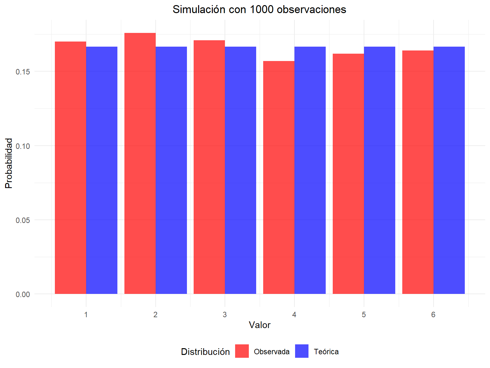

La distribución uniforme discreta es una de las distribuciones de probabilidad más elementales. Se caracteriza porque todos los valores posibles de la variable aleatoria tienen la misma probabilidad de ocurrir.
Definición 2.1 Una variable aleatoria discreta \(X\) sigue una distribución uniforme discreta en el conjunto de \(n\) números \(\{x_1, x_2, \ldots, x_n\}\) si:
Ejemplo 2.3 (Simulación en R) Generación de números aleatorios de una variable aleatoria \(X\sim unif\{1, 2, 3, 4, 5, 6\}\) y comparación con las probabilidades teóricas.
Comparación entre probabilidades teóricas y observadas
Valor
Prob. Teórica
Freq. Observada
1
0.1667
0.170
2
0.1667
0.176
3
0.1667
0.171
4
0.1667
0.157
5
0.1667
0.162
6
0.1667
0.164
Visualización de la simulación
Código
# Preparar datos para el gráficocomp_long <- comparacion |>pivot_longer(cols =c(Prob_Teorica, Freq_Observada),names_to ="Tipo",values_to ="Probabilidad") |>mutate(Tipo =case_when( Tipo =="Prob_Teorica"~"Teórica", Tipo =="Freq_Observada"~"Observada" ))ggplot(comp_long, aes(x = Valor, y = Probabilidad, fill = Tipo)) +geom_col(position ="dodge", alpha =0.7) +scale_x_continuous(breaks =1:6) +scale_fill_manual(values =c("Teórica"="blue", "Observada"="red")) +labs(title =paste("Simulación con", n_sim, "observaciones"),x ="Valor",y ="Probabilidad",fill ="Distribución") +theme_minimal() +theme(plot.title =element_text(hjust =0.5),legend.position ="bottom")

Comparación entre distribución teórica y simulada
2.3 Aplicaciones Prácticas
La distribución uniforme discreta tiene múltiples aplicaciones:
Juegos de azar: Dados, ruletas, sorteos
Muestreo: Selección aleatoria de elementos
Simulación: Generación de números aleatorios equiprobables
Investigación: Asignación aleatoria de tratamientos
2.4 Propiedades Importantes
2.4.1 Relación con otras distribuciones
Caso especial de la distribución categórica con probabilidades iguales
Límite discreto de la distribución uniforme continua
Base para generar otras distribuciones discretas
2.4.2 Teorema Central del Límite
Verifiquemos el Teorema Central del Límite mediante simulación para el caso de variables aleatorias con distribución uniforme discreta.
Generaremos \(k=1000\) muestras cada una de tamaño \(n=30\) de una distribución uniforme discreta en el conjunto \(\{1, 2, 3, 4, 5, 6\}\) y observaremos la distribución de sus medias muestrales. En el Ejemplo 2.1 se obtuvo que para \(X\sim \text{unif}\{1, 2, 3, 4, 5, 6\}\) tenemos \(\mu=7/2\) y \(\sigma^2= 35/12\), luego la media muestral:
\[\bar{X}_{30}=\frac{1}{30}\sum_{i=1}^{30} X_i\] Tendrá aproximadamente la siguiente distribución:
cat("Probabilidad de obtener un número par:", probabilidad_par, "\n")
Probabilidad de obtener un número par: 0.5
Ejercicio 2.2 En un juego, se selecciona aleatoriamente un número entero entre 5 y 15 (inclusive). Calcule la media y la varianza de esta distribución.
Código
# Definir el rangovalores <-5:15# Calcular media y varianzamedia <-mean(valores)varianza <-var(valores) * (length(valores)-1)/length(valores) # ajusto a población# Resultadoscat("Media:", media, "\n")
Media: 10
Código
cat("Varianza:", varianza, "\n")
Varianza: 10
Ejercicio 2.3 Simule 500 observaciones de una distribución uniforme discreta en {0, 1, 2, 3, 4} y compare las frecuencias observadas con las teóricas.